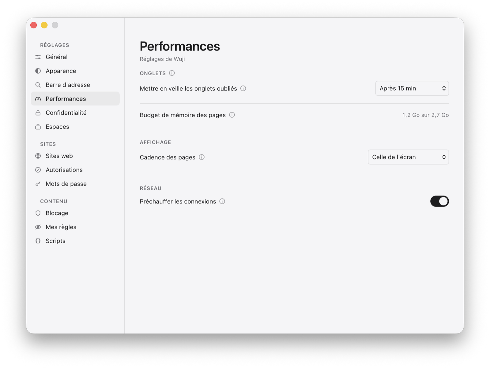

WujiPerformance
Performance
Le moteur est WebKit : une page s'analyse et s'exécute à la vitesse de Safari. Ce qu'un navigateur peut faire par-dessus, c'est ne pas se mettre en travers — et c'est là qu'il y avait tout à gagner.
Des onglets qui dorment

Suspendus par WebKit
Un onglet qu'on ne regarde pas voit son JavaScript et sa mise en page suspendus : une page qui brûle un cœur entier tombe à 3 % en arrière-plan, et reprend où elle en était, sans rechargement.
Endormis après un délai
Quinze minutes, trente, une, deux ou quatre heures — ou seulement quand le Mac en manque. L'onglet rend sa mémoire sans quitter la colonne, et le survol le réveille avant le clic.
Ce qui ne dort pas
Une page qui joue du son ou qui charge n'est pas inactive, et un onglet où l'on a tapé dans un formulaire est gardé — la saisie ne se perd pas dans un sommeil.
Un budget de mémoire
Au-delà d'un tiers de la mémoire du Mac, les onglets quittés depuis plus de cinq minutes s'endorment sans attendre, le plus ancien d'abord — avant que macOS ne ralentisse tout. Le réglage affiche la mesure.
Sous la pression de macOS
Quand le système manque de mémoire, les onglets s'endorment et le cache en mémoire des ressources se vide ; celui du disque reste.
Affichage et réseau
La cadence de l'écran
Jusqu'à 120 images par seconde sur un écran qui les affiche ; 60 dans tous les cas en mode économie d'énergie.
Des connexions préchauffées
La résolution et la poignée de main partent pendant que vous tapez une adresse, et dès l'appui sur un lien vers un site déjà visité : environ 150 ms de moins avant le premier octet.
Un onglet d'avance
Un onglet neuf est préparé à l'avance, son processus déjà lancé : une page ouverte dans un nouvel onglet s'affiche en 88 ms au lieu de 140.
Rien sur le chemin de la page
La colonne se met à jour sur place au lieu de se reconstruire à chaque signal, la vérification d'un certificat est retenue par hôte, et ce que Wuji va chercher pour lui passe en HTTP/3 d'emblée, quatre connexions par hôte au plus.
Ce que dit le banc
Les chiffres viennent de bench.sh : cinq passes entrelacées, médianes, en version publiée, sur des pages servies en local. Ce qui se mesure se mesure avant d'être écrit.
| Onglets chargés | Total | Application | Rendu | Réseau | GPU |
|---|---|---|---|---|---|
| 5 | 307 Mo | 105 Mo | 174 Mo | 14 Mo | 13 Mo |
| 15 | 609 Mo | 122 Mo | 445 Mo | 29 Mo | 15 Mo |
| 30 | 1 062 Mo | 139 Mo | 850 Mo | 52 Mo | 17 Mo |
Tout ce que macOS attribue à Wuji
À trente onglets, l'application pèse 139 Mo ; ses processus de rendu en pèsent 850 — le prix de WebKit, que Safari paie pareil. Le banc additionne tout : rendu, réseau, GPU.
Le critère
Un profil pris pendant le chargement d'une page lourde ne montre plus aucun symbole de Wuji au-delà d'un échantillon isolé : ce qui reste à gagner est dans le moteur.